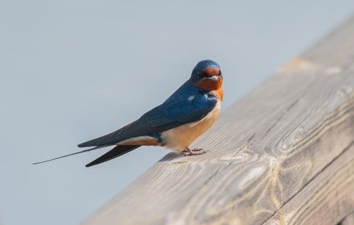
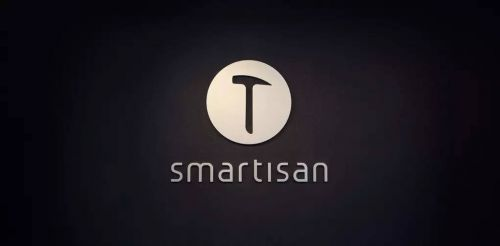
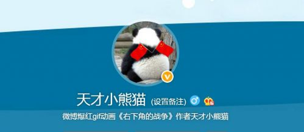
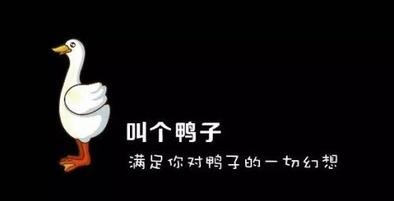

400-500-8888
时间：2016-04-21
作者 | 小马宋（暴风魔镜创意合伙人）
好名字有多重要？
回想起上次深圳的文案培训班，50个学员中，一个月后回想起来，我似乎只记住以了学员的名字，是个女孩，叫燕子。
当时的情况是这样的，我让每个学员用一句话介绍了自己以及自己的名字。大家的名字五花八门，为什么50个名字我只记住了“燕子”这个？当然有人肯定会不怀好意的猜测：估计这姑娘长得最漂亮呗。好吧，这姑娘确实挺好看，但这并不是我记住她名字的原因。原因在于，她用了一个昵称来介绍自己，而且这个昵称是非常通用的是个名字，这在华与华的品牌构成体系里被称为超级符号。

如果这50位学员就是品牌的话，那意味着一天下来我只记住了一个品牌。给品牌取名字是个学问，今天就扯扯名字这个事情吧。
降低传播成本
取名字有个本质需求，是华与华广告的老板华杉老师说的：降低传播成本。
降低传播成本其实包括两个方面，一个是降低认知成本，就是一眼要看懂；一个降低扩散成本，就是看一眼就记住，而且乐于介绍给别人。
如何降低认知成本？就是通俗易懂，跟行业有相关性。
比如同样是做虚拟现实眼镜的，暴风的叫做魔镜，另外一家的产品叫格拉斯，我就骄傲的认为魔镜比较好。因为魔镜是已有的一个大家熟悉的词，格拉斯是英文glass英文的音译，中文上来说没有任何意义，跟虚拟现实眼镜也看不出任何关系。小米是一个通俗名字的典范，锤子也是，康师傅、大象（避孕套）、猎豹（浏览器）、豌豆荚（安卓市场）、小白熊（儿童电器）、苹果、联想（但联想的英文名字好烂）、土豆等等都是，这些词汇都是大家耳熟能详的词，让人一看就能记住。
但小米和锤子这样的名字都没有解决行业相关性的问题。什么叫相关性，就是我一看名字，就知道或者能猜测出这个名字是卖什么的。

比如兰蔻、阿芙、雅诗兰黛、妮维雅、玛丽黛佳，我一看就觉得是化妆品类里的，不过这些名字又在通俗性上有所缺失。当然像可口可乐、奔驰、宝马、农夫山泉、三只松鼠就是很牛逼的名字，名字既顺口，又有行业联想（可乐就是可口可乐自己定义的一个品类，奔驰宝马则跟汽车相关，农夫山泉是水，三只松鼠是坚果），鲜橙多也是一个很好的名字，通俗易懂，有行业属性，容易记忆，还突出了产品特点，这么好的名字不容易。
当然，有些名字通过一些方法，可以自动补救关于行业联想的问题。
比如小狗电器，虽然它的品牌叫小狗，很容易记忆，但没有相关性，所以它自己叫小狗电器，这就补足了相关性。雕爷牛腩也是，雕爷这个品牌不会代表任何品类，但是加上牛腩就直接给了行业属性。
为什么花名更容易记住？因为花名一般是用的熟悉的词语。比如原来早期四大网络写手之一的李寻欢，原名路金波，李寻欢就比路金波这个响亮。比如雕爷的原名叫孟醒，阿里巴巴公司里都用花名。我们习惯了叫罗永浩老罗，叫罗振宇罗胖，都是一个道理。
名字不光是品牌需要，任何有名字的东西都需要。
比如艺人里面，王菲之前名字叫王靖雯，就没有王菲这个名字通俗好记，所以王菲后来火了。小沈阳也是个很好记的名字，但也是艺名。大小S也是好记的名字。微博大号的始祖，叫冷笑话，就是个通俗易记、易于理解的好名字，天才小熊猫、留几手、万能的大熊这些名字都比较好。
少林修女其实也是个好名字，可是这姑娘到微博上改名“顾异的”，其实是一个很不顺口的名字（她有名气和转发量跟她名字没关系，因为她内容做的好）。咱们举个栗子，比如你要给我推荐一个有意思的号，你说天才小熊猫，我一下子就能记住并且输入出来，可是“顾异的”就不行。

小马宋也不是个好名字，以这个观点来说。这个名字因为是我的网名，01年就注册了，那时候注册名字不能重复，因为我家那个村子叫小马宋，我就用了小马宋这么个网名。它最大的好处是不会重复，但传播上并不容易。
以前在名片上印小马宋，递上名片后人家第一个反应是，哇，你怎么叫这么名字，你几个意思嘛？这样我就可以找个话题跟陌生人攀谈了，因为那时我比较内向，不善交际，名字倒是忙了我不少忙，成了搭讪利器。“中国文联”虽然耳熟能详，可惜它被提前认知了，大家都觉得它是某个正经的写作机构的官方简称，往往产生误会，也不太好。
好名字的4个特性
下面说说好名字具有的一些普遍特征，以及坏名字的特点。
第一个是短。
因为越短越容易记住，当然短到一个字就不太好，因为在我们的语言习惯里大家介绍一个名字还是两个更容易说出口。所以两个字的名字是最容易记住的，老牌的公司新浪、百度、搜狐、谷歌、微软、雅虎就都是两个字，后来才出现三个字、四个字的互联网公司（主要还是域名的原因）。
你有没有发现，即使是四个字的名字，我们往往会把他们简称为两个。比如暴风（影音）、阿里（巴巴）、聚美（优品）、阿迪（达斯）、滴滴（打车）、美图（秀秀），哥伦比亚大学我们会称为哥大，耶鲁大学我们叫耶鲁，电脑就比计算机这个名字更通俗和流行，而熟悉我的人都叫我小马，不叫我小马宋。
这里面当然有例外，因为名字的本质功能是要降低传播成本，如果这个名字很长，但很好记很好玩，那就遵守这个本质原则。
比如“张君雅小妹妹”这个名字，因为颠覆了人类对食品名字的认知，所以就有强烈的传播性。最近冉冉升起的互联网鸭子品牌“叫个鸭子”，虽然四个字，但是大家都不想简化它，因为一句“昨天晚上老公出差，我想叫个鸭子”发到朋友圈，绝对是点赞神器。

对于一个公号来说，名字短了，还便于在新推信息上展示更多的文章题目，这也是一个优势。
第二个是用现有的、通俗的词。
不要试图去创造新词，这是很重要的一件事。一位新词大家基本都记不住，所以即使像“十动然拒”这种当时爆红的网络名词，也会很快被弃用，因为过于隐晦难懂。人艰不拆就略好，“任性”就更好了，因为任性本来就是大家能够理解的词。不要用个例去反驳我，那只是特殊现象。
三星集团旗下有个广告公司叫第一企划，其实还不错，到了中国的全资子公司叫杰尔思行，就完全不知所云了。同样是汽车品牌名字，奔驰就比斯巴鲁好，宝马就比迈巴赫好，长城就比比亚迪好。我有一个奥美同事出去做了一个高端旅游网站，叫“赞那度”，一听我就泪奔了，这名字太难记了。老金就比金鹏远这个本名好，但是“老金扯谈”，就不好。因为它看起来像是“老金扯淡”，而我当初就是搜老金扯淡这个名字，却没有搜到。你看老金自己后来都在公号的文尾加上一句解释：老金扯谈，不是扯淡。
通俗的词，最好还是通俗的字。
比如山东有个小吃叫“甏肉干饭”，只有少数几个有学问的孔乙己能认识，注定流行不起来。小笼包、麻辣烫、兰州拉面、鸡蛋灌饼、驴肉火烧、羊肉泡馍，这些熟悉的小吃其实都是通俗的字，比如biangbiang面，电脑都打不出来，更谈不上流行了。36氪，其实也不算是个好名字。
第三个，要用中文，不要英文，尤其不要用中英夹杂的名字。
当然我说的是在中国，要是在美国，这句话就正好相反了。讽刺的是，传播圈子里有很多名字就很没有传播性。
比如wemedia这种看似逼格很高的名字，绝逼没有淘宝联盟这样的名字来的爽快和明确。QQ这个名字其实也不算很好，比如在我们老家，大家都叫它“秋秋”，因为山东话发QQ非常难发，同名的那款车也不行，哪有大奔听起来这么霸气和易懂。互动广告公司里有个叫IM2.0的，名字实在不好发，所以后来我总是叫它2.0。
即使是只能用字母的名字，比如微信公号的ID，也尽量用汉语拼音，不要用英文。
比如中国文联zhongguowenlian，我跟你介绍说就是中国文联的全拼，就很容易。还有个广告圈里不错的公号“花花世界”，中文名字很好，但公号ID叫做playworldallbird（玩尽世上鸟），虽然想法诱人，有广告人的范儿，但传播上不容易，你给人介绍他的账号ID是playworldallbird，估计10个人有8个会问你三遍才知道，另外两个人会问你5遍。
第四，不要用有歧义或者多音字，不要篡改原有词语。
比如前面说的杰尔思行（xing）广告，很多人以为念hang。罗辑思维其实名字读起来还挺好的，但是写起来就不好。因为我常常打出来叫逻辑思维。
最近取得2个名字
说一说我最近给朋友取的一个名字，她做了一个多肉植物品牌，主要是用来做礼物，只在网上卖。我给她取了一个名字叫“忽然想起你”，目标是送给一个你忽然想起的人。这个多肉植物店马上就要开业了。
另外一个朋友的内裤品牌，我取了一个更绝的名字，只是不确定她还有没有注册，我就不说了。
我自己的那本书，名字叫《一本全是广告的书》，我觉得也还蛮好的，因为很多人看到名字，一时激动“我靠，居然有这么牛逼的书名”，于是脑子一发热就去买了。
Copyright © 2015-2016 Maker Cloud 创客云 版权所有粤ICP备32852599-1


 在线咨询
在线咨询 在线咨询
在线咨询 400-500-8888
400-500-8888